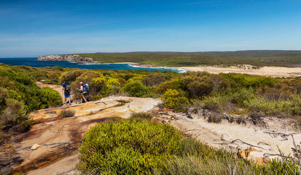
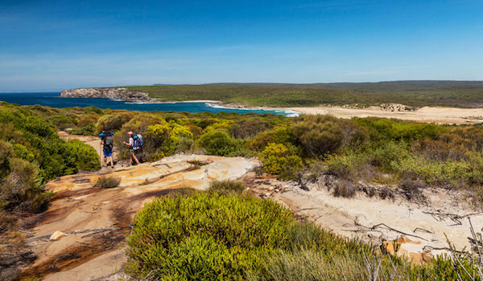
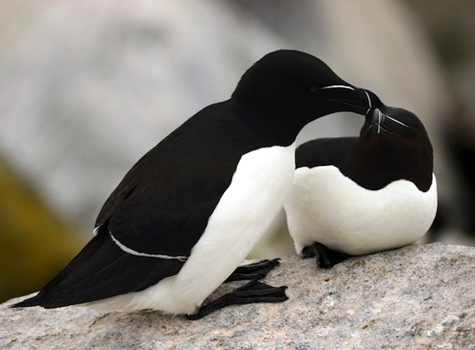

Acadia National Park
Maine
 

Acadia is located on Mount Desert Island along the coast of Maine. The park is 264 miles from Boston and only 50 miles from Bangor, Maine.
This park costs $30 per vehicle to enter. Backcountry camping is prohibited as the park is so small, but there are campsites available. Kayaking and canoeing are popular activities with 125 miles of hiking trails. The coastal location is prime for bird-watching and marine life studies. It is home to a range of animal and plant life that is beautiful in any season.
Acadia National Park is an American national park located in the state of Maine, southwest of Bar Harbor. The park preserves about half of Mount Desert Island, many adjacent smaller islands, and part of the Schoodic Peninsula on the coast of Maine. Acadia was initially designated Sieur de Monts National Monument by proclamation of President Woodrow Wilson in 1916. Sieur de Monts was renamed and redesignated Lafayette National Park by Congress in 1919—the first national park in the United States east of the Mississippi River and the only one in the Northeastern United States. The park was renamed Acadia National Park in 1929. More than 3.5 million people visited the park in 2017.

Native Americans of the Algonquian nations have inhabited the area called Acadia for at least 12,000 years. They traded furs for European goods when French, English, and Dutch ships began arriving in the early 17th century. The Wabanaki Confederacy has held an annual Native American Festival in Bar Harbor since 1989. Samuel de Champlain named the island Isle des Monts Deserts (Island of Barren Mountains) in 1604. The island was granted to Antoine de la Mothe Cadillac by Louis XIV of France in 1688, then ceded to England in 1713.
Summer visitors, nicknamed rusticators, arrived in 1855, followed by wealthy families, nicknamed cottagers as their large houses were quaintly called cottages. Charles Eliot is credited with the idea for the park. George B. Dorr, the "Father of Acadia National Park," along with Eliot's father Charles W. Eliot, supported the idea through donations of land, and advocacy at the state and federal levels. John D. Rockefeller Jr. financed the construction of carriage roads from 1915 to 1940. A wildfire in 1947 burned much of the park and destroyed 237 houses, including 67 of the millionaires’ cottages.
The park includes mountains, an ocean coastline, coniferous and deciduous woodlands, lakes, ponds, and wetlands encompassing a total of 49,075 acres (76.7 sq mi; 198.6 sq km) as of 2017. Key sites on Mount Desert Island include Cadillac Mountain—the tallest mountain on the eastern coastline and one of the first places in the United States where one can watch the sunrise—a rocky coast featuring Thunder Hole where waves crash loudly into a crevasse around high tides, a sandy swimming beach called Sand Beach, and numerous lakes and ponds. Jordan Pond features the glacially rounded North and South Bubbles (rôche moutonnées) at its northern end, while Echo Lake has the only freshwater swimming beach in the park. Somes Sound is a five-mile (8 km) long fjard formed during a glacial period that reshaped the entire island to its present form, including the U-shaped valleys containing the many ponds and lakes. The Bass Harbor Head Light is situated above a steep, rocky headland on the southwest coast—the only lighthouse on the island.

The park protects the habitats of 37 mammalian species including black bears, moose and white-tailed deer, seven reptilian species including milk snakes and snapping turtles, eleven amphibian species including wood frogs and spotted salamanders, 33 fish species including rainbow smelt and brook trout, and as many as 331 birds including various species of raptors, songbirds and waterfowl. In 1991, peregrine falcons had a successful nesting in Acadia for the first time since 1956. Falcon chicks are often banded to study migration, habitat use, and longevity. Some trails may be closed in spring and early summer to avoid disturbance to falcon nesting areas.
Recreational activities from spring through autumn include car and bus touring along the park's paved loop road; hiking, bicycling, and horseback riding on carriage roads (motor vehicles are prohibited); rock climbing; kayaking and canoeing on lakes and ponds; swimming at Sand Beach and Echo Lake; sea kayaking and guided boat tours on the ocean; and various ranger-led programs. Winter activities include cross-country skiing, snowshoeing, snowmobiling, and ice fishing. Two campgrounds are located on Mount Desert Island, another campground is on the Schoodic Peninsula, and five lean-to sites are on Isle au Haut. The main visitor center is at Hulls Cove, northwest of Bar Harbor.